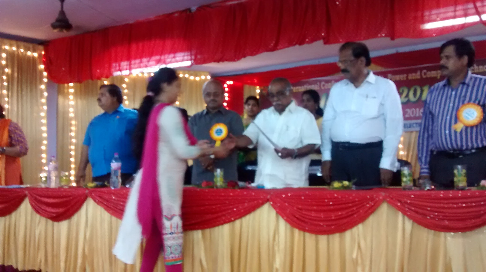
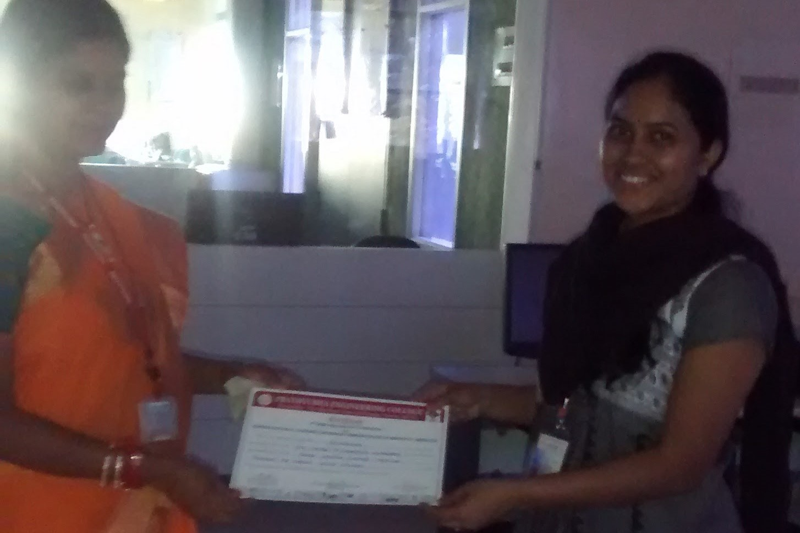

Awards and Membership
Honours
- Best paper award in IEEE International Conference on Circuit, Power and Computing Technologies (IEEE ICCPCT 2016), from 18-19 March 2016 at Kumarcoil, Chennai, India, and paper titled as “QoS-based Intrusion Detection for Sinkhole attack in Wireless Sensor Network”.
- 1st International conference on Innovation in computer science, Electrical and Electronics Engineering (ICICEE 2020), CIT-Tumkur on 3rd July 2020, “Automation using Brain signal and Machine Interface” Best paper award.
- Excellence presentation skills award as a project Engineer in Ericson project, Wipro Technologies.
- Second topper, MTech, BIT college of Engineering, Bangalore, VTU.
- Young Fellow Award in International Award Conference on Multi-Disciplinary Research and Application-2019
- High level Presentation in Wipro Technologies, Telecom Domain (awarded as one of the best top 5 presenters among the organization).

Best Paper Award
Professional Affiliation/ membership
- IEEE Professional Member
- Member of International Association of Engineers (IAENG)
- Member of Institute of Scholars (InSc).
- Editorial Board Member of Journal of Electronic Research and Application (JERA).
- Peer Reviewer Participation in 37.3 issue of Ingenieria e investigacion Journal.
- IFERP Board Member.
- World Association for Scientific Research and Technical Innovation(WASRTI)
- IRED Professional Member.
- IARDO Professional Member.
- TEI Springer journal Member.
